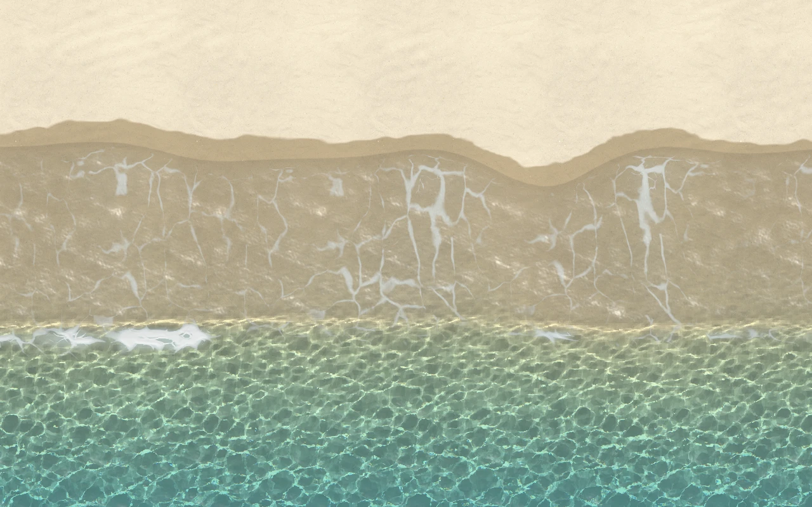

Swash
Write in the sand and the sea takes it back. Each wave breaks, runs up the beach and drains away, and fills whatever you draw in its path. Draw in the sand, or write a word.
This browser has no WebGPU, so this is a recording.

Write in the sand and the sea takes it back. Each wave breaks, runs up the beach and drains away, and fills whatever you draw in its path. Draw in the sand, or write a word.
This browser has no WebGPU, so this is a recording.